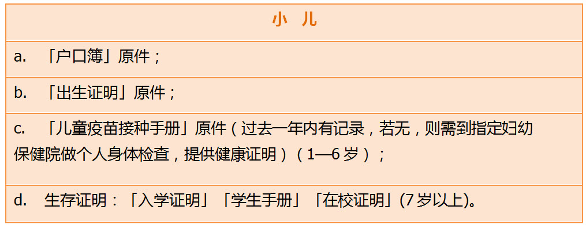

投保案例
INFORMATION工作笔记：一家三口投保香港重疾案例..
谢女士今年31岁，计划为一家三口都上一份重疾保险，身边很多的朋友都是买的香港保险，对比国内的，也是觉得保障很多。经朋友介绍联系到香港保险规划师Craz：
第一周：
1、 规划师Craz认真询问了谢女士对于重疾险保障的需求，就保诚、友邦、安盛、富卫等几大家保险公司的重疾产品进行比对、筛选；
2、针对性的为她设计了三套方案，并且给谢女士做了详细的电话讲解，帮助她更好的了解到香港重疾险各个产品的保障；
3、再根据她的要求做了相对应的调整，寻求出最适合谢女士一家的重疾方案，力争做到性价比最高。谢女士最终选定了以下这个方案。
第二周：
1、谢女士提到关于是否需要体检的问题，规划师Craz询问了一家三口的体检情况，是否保留有体检报告，发送过来仔细看看；
2、 通过体检报告，发现谢女士先生患有中度脂肪肝，并伴有总胆固醇偏高以及高血尿酸血症，由于谢女士先生生意应酬比较多，即使医生有叮嘱健康饮食以及安排用药，但是今年的体检报告依旧不乐观。
3、规划师Craz认真查看体检报告中的数值后，告知谢女士，他先生的这份保单被要求加费的概率非常大，并且加费的范围在20%-50%左右，并有可能会被拒保；对于带病投保的受保人，友邦的审核要比保诚稍微宽松一些。
4、谢女士与先生商量过后还是考虑一起去投保吧，考虑加费的话，也还是能够接受，只要能保就行了，就是担心会被拒保。这里规划师Craz就发现了一个怪相，内地客户普遍都存在一种现象，年轻时候身体健康时，都不愿意买保险，而到了中年时期，即使患病了，面临高额的保费时，依旧选择要投保。其实保险不是有钱想保就能保的，还需要有健康的身体才行。
第三周：
1、谢女士就保单的细节再次与规划师Craz进行确认与沟通，关于投保需要准备的资料，以及可以使用什么方式缴费，由于谢女士的孩子还未满18周岁，所以可以不用前往香港的，只需要带齐孩子的资料即可投保：
大人则需要带以下资料：
2、目前仍是可以使用visa或master卡直接刷卡支付保单费用的。（带有银联标志的亦可）
3、由于谢女士的身份证地址与现通讯地址不一致，所以规划师Craz告知还需要谢女士提供住址证明，例如信用卡账单、水电费账单或煤气账单等。
第四周：
1、谢女士和先生已经确定好了日期前往香港，在递交了投保预约申请书后，还告知规划师Craz他们的行程，谢女士计划带孩子去珠海长隆玩一圈再过香港，由于不熟悉地方，不知道如何前往香港；
2、 规划师Craz了解了谢女士在珠海当天入住的酒店后，发现距离珠海九州港码头不算很远，建议谢女士从九州港码头乘坐轮船前往香港，目的地是中港城码头。
3、由于香港保诚保险公司和香港友邦保险公司均在尖沙咀广东道海港城设立有验证缴费中心，而中港城码头就在广东道的尽头，所以距离相当近，这条路线是时间最短，距离最方便的了。
第五周：
1、 规划师Craz在谢女士约定投保的当天，在香港的中港城接谢女士一家
中港城码头入境大厅下船处：
2、接到人以后，规划师Craz先带谢女士一家去了保诚保险公司，完成谢女士以及谢女士宝宝的重疾保单，保诚保险公司坐落于尖沙咀海港城港威大厦保诚大楼8楼
3、完成保诚的两份重疾保单后，规划师Craz带着谢女士一家前往友邦保险公司，友邦保险公司在尖沙咀海港城的验证点，是港威大厦六座17楼，与保诚大楼相邻，此处就不晒图啦
4、投完保当天，谢女士一家还计划前往澳门游玩一天，考虑乘船前往，所以规划师Craz又将他们送回了中港城码头
从尖沙咀广东道出发前往中港城码头路线如下：
1、中港城码头的具体地址是九龙尖沙咀广东道33号，沿着广东道一直走，在尽头的红绿灯处有显著的地标提示
2、中港城其实是一个商场，码头在中港城商城的隔壁，正确的名字是中国客运码头
3、这里要做一个解释，因为很多客户第一次到香港时，对香港的电梯设置非常的困惑。因为香港目前仍有很多的文化是沿用英国的习俗，英国称一楼为“ground floor”，简称是“G”，而二楼才是“first floor”，所以我们进来后的这个楼层是“G”层，而出境大厅在“first floor”，1楼，早上接谢女士入境的楼层是2楼
4、在出境大厅有一块非常显眼的大屏幕，可以找到当天出境船只的最新时刻
5、了解了时刻以后，当然就是买票啦，在发船前的30分钟都还是可以买票的
6、每个登船口都会挂牌写明是出发前往哪里的，船票上也有写明登船码头口的编码，此处可以询问工作人员
第一周：
1、 规划师Craz认真询问了谢女士对于重疾险保障的需求，就保诚、友邦、安盛、富卫等几大家保险公司的重疾产品进行比对、筛选；
2、针对性的为她设计了三套方案，并且给谢女士做了详细的电话讲解，帮助她更好的了解到香港重疾险各个产品的保障；
3、再根据她的要求做了相对应的调整，寻求出最适合谢女士一家的重疾方案，力争做到性价比最高。谢女士最终选定了以下这个方案。
1、谢女士提到关于是否需要体检的问题，规划师Craz询问了一家三口的体检情况，是否保留有体检报告，发送过来仔细看看；
2、 通过体检报告，发现谢女士先生患有中度脂肪肝，并伴有总胆固醇偏高以及高血尿酸血症，由于谢女士先生生意应酬比较多，即使医生有叮嘱健康饮食以及安排用药，但是今年的体检报告依旧不乐观。
3、规划师Craz认真查看体检报告中的数值后，告知谢女士，他先生的这份保单被要求加费的概率非常大，并且加费的范围在20%-50%左右，并有可能会被拒保；对于带病投保的受保人，友邦的审核要比保诚稍微宽松一些。
4、谢女士与先生商量过后还是考虑一起去投保吧，考虑加费的话，也还是能够接受，只要能保就行了，就是担心会被拒保。这里规划师Craz就发现了一个怪相，内地客户普遍都存在一种现象，年轻时候身体健康时，都不愿意买保险，而到了中年时期，即使患病了，面临高额的保费时，依旧选择要投保。其实保险不是有钱想保就能保的，还需要有健康的身体才行。
第三周：
1、谢女士就保单的细节再次与规划师Craz进行确认与沟通，关于投保需要准备的资料，以及可以使用什么方式缴费，由于谢女士的孩子还未满18周岁，所以可以不用前往香港的，只需要带齐孩子的资料即可投保：

大人则需要带以下资料：
3、由于谢女士的身份证地址与现通讯地址不一致，所以规划师Craz告知还需要谢女士提供住址证明，例如信用卡账单、水电费账单或煤气账单等。
第四周：
1、谢女士和先生已经确定好了日期前往香港，在递交了投保预约申请书后，还告知规划师Craz他们的行程，谢女士计划带孩子去珠海长隆玩一圈再过香港，由于不熟悉地方，不知道如何前往香港；
2、 规划师Craz了解了谢女士在珠海当天入住的酒店后，发现距离珠海九州港码头不算很远，建议谢女士从九州港码头乘坐轮船前往香港，目的地是中港城码头。
3、由于香港保诚保险公司和香港友邦保险公司均在尖沙咀广东道海港城设立有验证缴费中心，而中港城码头就在广东道的尽头，所以距离相当近，这条路线是时间最短，距离最方便的了。
第五周：
1、 规划师Craz在谢女士约定投保的当天，在香港的中港城接谢女士一家
中港城码头入境大厅下船处：
2、接到人以后，规划师Craz先带谢女士一家去了保诚保险公司，完成谢女士以及谢女士宝宝的重疾保单，保诚保险公司坐落于尖沙咀海港城港威大厦保诚大楼8楼
4、投完保当天，谢女士一家还计划前往澳门游玩一天，考虑乘船前往，所以规划师Craz又将他们送回了中港城码头
从尖沙咀广东道出发前往中港城码头路线如下：
1、中港城码头的具体地址是九龙尖沙咀广东道33号，沿着广东道一直走，在尽头的红绿灯处有显著的地标提示
2、中港城其实是一个商场，码头在中港城商城的隔壁，正确的名字是中国客运码头
3、这里要做一个解释，因为很多客户第一次到香港时，对香港的电梯设置非常的困惑。因为香港目前仍有很多的文化是沿用英国的习俗，英国称一楼为“ground floor”，简称是“G”，而二楼才是“first floor”，所以我们进来后的这个楼层是“G”层，而出境大厅在“first floor”，1楼，早上接谢女士入境的楼层是2楼
4、在出境大厅有一块非常显眼的大屏幕，可以找到当天出境船只的最新时刻
5、了解了时刻以后，当然就是买票啦，在发船前的30分钟都还是可以买票的
6、每个登船口都会挂牌写明是出发前往哪里的，船票上也有写明登船码头口的编码，此处可以询问工作人员

扫一扫关注微信公众号
咨询电话:0105151551
公司地址:上海浦东新区
备案号:0-1245187431
版权所属:上海市浦东新区